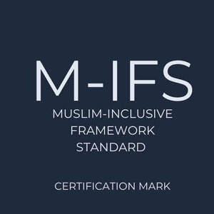

Trade Mark Journal No.2025/033 15 August 2025
UK00004203471 14 May 2025 (35,41)
Certification Mark

- Class 35
- Promoting DEI and inclusion to employees within an organisation [personnel services]; providing spaces for employees for prayer [personnel services]; business management services in implementing business processes and policies to facilitate and promote an inclusive environment for employees; drafting policies and processes for promoting DEI to employees within an organisation [personnel services]; business management services in implementing business processes and policies to facilitate and promote cultural awareness to employees within an organisation; drafting policies and processes for promoting cultural sensitivity to employees within an organisation [personnel services]; business management services in implementing business processes and policies for facilitating equal opportunities hiring, promotion and compensation within an organisation; business management services in implementing business processes and policies for facilitating inclusive recruitment; drafting and implementing policies for ensuring a safe working environment for employees with protected characteristics within an organisation [personnel services]; business management services in implementing business processes and policies to facilitate and promote flexible work arrangements; business management in implementing business processes and policies to facilitate and promote inclusive communication that is respectful and avoids stereotypes within an organisation; provide forums [safe spaces] for employees to raise and discuss concerns within an organisation; developing a diversity and inclusion strategy; [personnel services]; evaluating existing policies and practices to identify areas for improvement to ensure they reflect best practices vis-à-vis DFEI [gap analysis] within an organisation [business management]; information, establishing anti-discriminatory policies with an organisation [personnel services]; business management services in implementing business processes and policies to facilitate making reasonable accommodations for those with protected characteristics within an organisation; creating inclusive job ads; business management in providing channels of communication to enable employees to give feedback within an organisation; implementing flexible working policies to accommodate religious holidays, time for prayer [personnel services]; provision of wadhu (wash) facilities in the workplace [personnel services]; drafting and implementing processes and policies to promote an inclusive workplace [personnel services]; provision of human resources to employees within an organisation; provision of inclusive human resources to employees within an organisation; drafting and implementing policies promoting and permitting dress codes that accommodate religious observance for employees within an organisation; drafting and implementing anti-discriminatory policies within an organisation [personnel services]; drafting and implementing policies addressing bias, exclusion or microaggressions in the workplace [personnel services]; drafting and implementing policies to allow paid and/or unpaid sabbaticals and other leave; drafting and implementing policies to allow paid and/or unpaid leave for pilgrimage including Haj; providing information, advisory and consultancy relating to the aforesaid services provided to employees within an organisation.
- Class 41
- Providing education and training services to employees within an organisation; providing education and training in connection with DEI to employees within an organisation; providing cultural awareness education and training to employees within an organisation; providing education and training services about the dietary requirements of those with protected characteristics to employees within an organisation; providing allyship training to employees within an organisation; education and training services for providing model inclusive behaviour to employees within an organisation; providing education and training services in connection with encouraging diverse perspective’s and allyship to employees within an organisation; management and training services to develop capability and awareness of DEI and related issues offered to employees within an organisation; electronic publication for promoting DEI to employees within an organisation; electronic publication for promoting cultural sensitivity to employees within an organisation; electronic publications for promoting awareness about dietary requirements to employees within an organisation; planning, organising ,supporting, hosting and celebrating diverse cultural events within an organisation; education and training in connection with religious observance, in particular an understanding of the tenets of Islam including an awareness of Ramadan, prayer, observant dress and wudhu; organising and hosting inclusive workplace events; inclusive event planning accommodating, diet, faith, participation (including virtual participation to accommodate personal beliefs and religious observance); information, advisory and consultancy services relating to all of the aforesaid provided to employees within an organisation.
Invitise Ltd
Representative: Murgitroyd and Company
The Regulations provisionally accepted by the Registrar for governing the use of this Certification trade mark are open to inspection at the Trade Marks Registry, from where copies may be obtained. If no opposition arises the Registrar will approve the Regulations and the mark will proceed to registration.